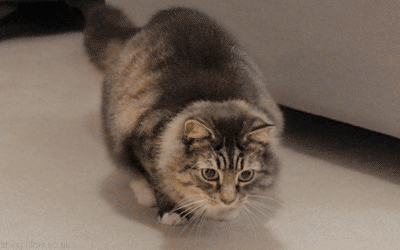
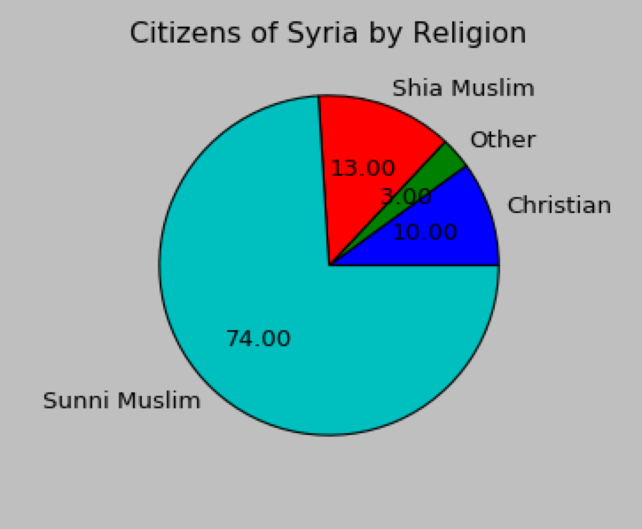

Home
Cayla Wroth
My name is Cayla Wroth and I am a senior at Ayala High School. I have been the Drum Major of the Ayala High School Marching Band for two years and am very
passionate about music. In addition to my musical passion, I have an interest in languages and have become fluent in Spanish and Tagalog,
and can read/write Korean. I also serve as the Vice President of the Ayala Polynesian Club and President of the AHS National Art Honor Society.
Outside of school, I enjoy listening to K-Pop and spending time with my cats.
some interesting facts about me:
- I will be attending Columbia University in fall 2017.
- I am part of an organization called Watch the Wild where I serve as a Turtle Ambassador and collect information about the animals
in the community.
- I have been stung by a stingray.
↓ just keep scrolling! ↓

My Portfolio
Making My Way Downtown.

I created this web page to gain a deeper understanding of basic programming and how the systems that allow users to
browse such web pages operate. I was also able to expand upon my previous knowledge about HTML and CSS usage.
1.1.7 Project
Coffee the Cat

Take a look at our Project Backlog here!
Interactive Project
Take a look at our Project Flowchart here!
My First App Project
3.2.7 Data Project

Data Project on the constitutionality of Donald J. Trump's immigration ban. The Python Data code accesses
the included .csv file, loads the data into memory, and outputs a stacked bar graph. You can find the files
used to create this visualization here!
The following have contributed to the development and support of this web page: Mr. Anthony Pittman's CSP
First Website Document, the MIT Scratch Team, and PSS Imaging.
{kind=link}
{kind=link}